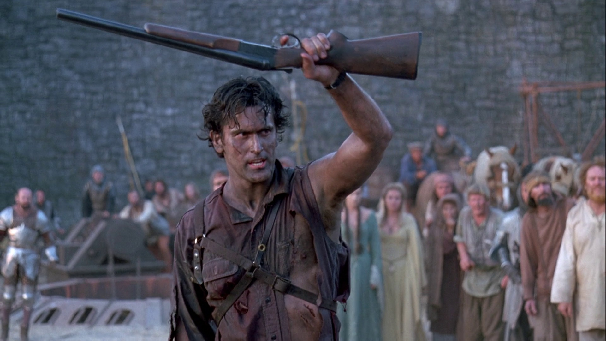

The medium close-up frames your subject from roughly the chest up. So it typically favors the face, but still keeps the subject somewhat distant.
The medium close-up camera shot size keeps the characters eerily distant even during their face-to-face conversation.
https://www.studiobinder.com/blog/ultimate-guide-to-camera-shots/